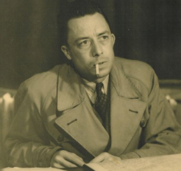
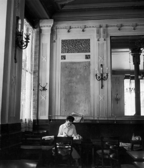
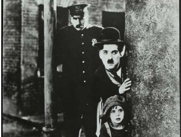
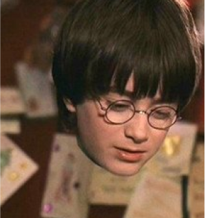

시리즈
-
[연애편지] 미리보기
#5. 보부아르가 보낸 마지막 편지
매우 소중한 당신. 어떤 편지도 부치지 않고, 어떤 편지도 오지 않는 영원 같은 시간이 흘렀어요. 당신에 관한 몇 가지 소식이 새어 들어왔어요. 알랭인가, 세르주인가가 당신이 매우 고상한 의상을 걸치고 다닌다고 일러 주던데, 정말 당신이 맞아요?
-
[연애편지] 미리보기
#1. 넬슨 올그런에게 보낸 첫 번째 편지
사흘 전에는 스카치를 마시러 니스로 내려갔다가 우연히 우체국 앞에서 늙은 앙드레 지드와 마주쳤어요. 그를 알아요? 작년에 노벨 문학상을 받은 프랑스 작가예요. 미국에서 그의 『일기』가 번역됐는데, 그 책은 미국인에게는 길고 지루할 거예요.
-
[연애편지] 미리보기
#2. 당신의 온 존재와 함께할 거예요.
우리는 추억과 희망을 통해, 그리고 떨어져 있는 거리와 편지를 통해 서로를 사랑하고 있어요. 우리가 이 사랑을 인간적이고 살아 있는 행복한 감정으로 만들 수 있을까요? 그래야만 해요. 저는 우리가 성공하리라 믿지만, 쉽지 않을 거예요.
-
[연애편지] 미리보기
#4. 앙드레 지드, 알베르 카뮈, 찰리 채플린
상냥하고 기막히게 멋진 사랑하는 나의 ‘토박이 젊은이’, 당신은 저를 또 한 번 울게 했어요. 그러나 달콤한 눈물, 당신에게서 오는 그 모든 것이 그렇듯이 달콤한 눈물을 흘리게 했지요. 저는 막 비행기 안에 자리를 잡곤 당신의 필체를 보고 싶은 마음에 당신에게 무언가를 써 달라고 부탁하지 않은 걸 후회하면서 당신 책의 첫 장을 넘겼어요.
-
시리즈 [보이지 않는]
#0. 빛과 물질의 탐구가 마침내 도달한 세계
아인슈타인의 중력 개념에 따르면 거대한 물체는 그 주변의 공간과 시간을 뒤틀어 그 공간을 통과하는 물질과 빛의 경로에 영향을 준다. 변환광학은 똑같이 왜곡된 공간의 수학을 사용하지만, 광학 장치를 설계하는 도구로 사용한다. 이를 염두에 두면, 빛이 공간의 가운데에 숨겨진 영역을 우회하여 마치 아무것도 만나지 않은 것처럼 지나가도록 공간을 왜곡한다는 상상은 얼마든지 나올 수 있다.
-
시리즈 [보이지 않는]
#3. 보이지 않는 빛, 보이지 않는 괴물
보이지 않는 빛이 물리학의 큰 그림에 어떻게 들어맞는지 더 잘 이해하기 위해서는 더 많은 세월이 필요했다. 그러나 이전에는 상상할 수 없었던 숨겨진 현상의 세계가 있다는 생각은 금방 퍼져 나갔다. SF와 공포 소설 작가들이 가장 먼저 새로운 물리학을 이용해 남들에게 보이지 않을 수 있는 능력을 구현하거나 설명할 수 있는 방법에 대해 생각했다.